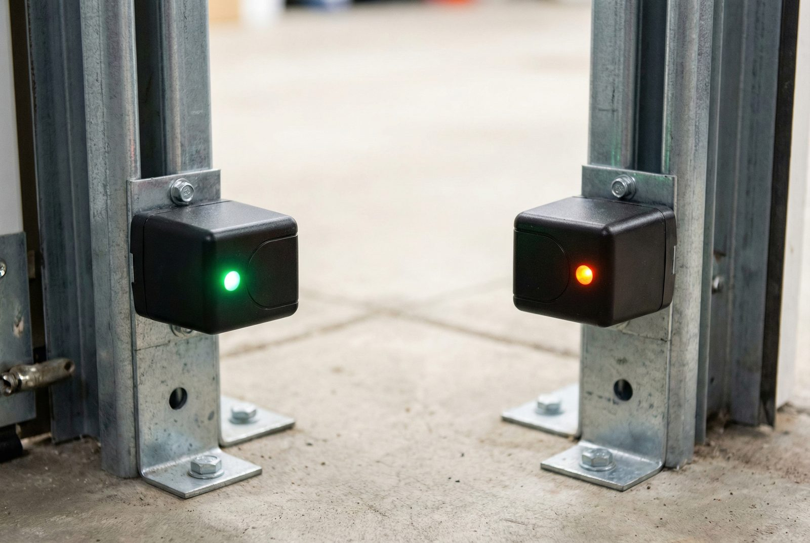
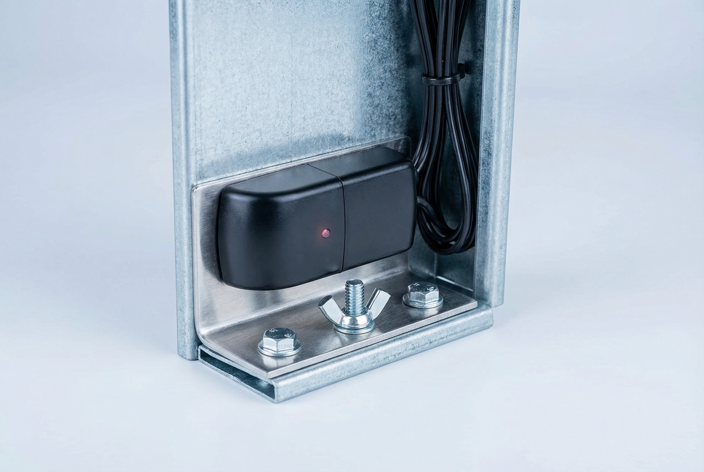
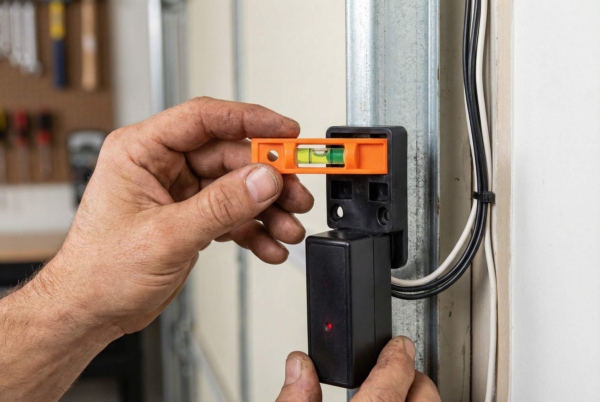
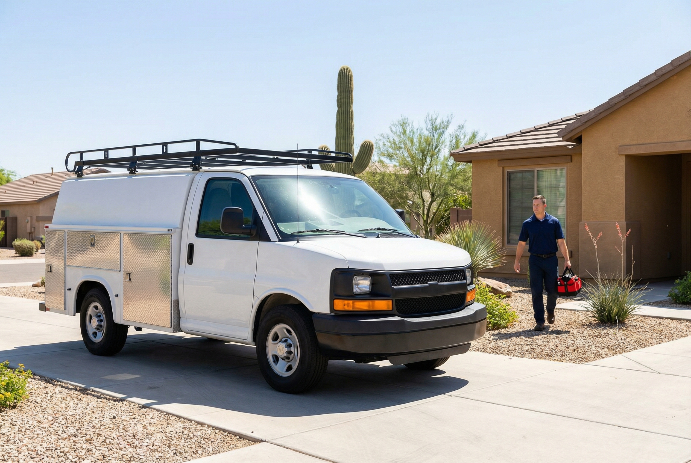

If your garage door reverses before it closes, refuses to move at all, or the indicator lights on the sensor units are blinking, you likely have a sensor problem. Garage door safety sensors are a critical safety feature required by federal law on every residential opener installed since 1993 — and when they fail or fall out of alignment, your door simply will not close. At Gilbert Garage Door Pro, we diagnose and fix garage door sensor problems the same day you call, restoring your door's safe, reliable operation quickly.
Sensor issues in Arizona come with a complication that homeowners in other states rarely encounter: direct sun interference. West-facing garages in Gilbert get blasted with intense afternoon sunlight that can overwhelm the infrared beam between the sensors, causing intermittent or persistent failures even when the sensors are perfectly aligned and clean. Our technicians have seen this hundreds of times throughout the East Valley, and we know exactly how to solve it. Whether your problem is a simple alignment issue, dust accumulation on the lenses, wiring damage, or sun interference, we have the fix.
If your door won't close and you need it secured urgently, call us now at (480) 555-0199. A door that won't close because of a sensor fault is a security concern — we offer 24/7 emergency garage door repair throughout Gilbert and the East Valley for situations exactly like this.

Garage door safety sensors — also called photo-eye sensors — are a pair of small units mounted on each side of the door opening, approximately six inches above the garage floor. They work as a matched set: one sensor emits a continuous infrared beam (the sending eye), and the other receives that beam (the receiving eye). As long as the beam travels unobstructed from one sensor to the other, the opener knows the path is clear and will allow the door to close.
The moment anything breaks that infrared beam — a person, a pet, a bicycle tire, a cardboard box left in the door's path — the receiving sensor stops detecting the beam and immediately signals the opener to reverse direction. This automatic reversal is the core safety feature. Without functioning sensors, a closing garage door has no way to detect an obstruction and will continue moving until it hits something or someone. This is why the U.S. Consumer Product Safety Commission considers properly functioning sensors non-negotiable for safe door operation.
The requirement for these sensors became federal law under the UL 325 standard, which was adopted in 1993 following garage door-related injuries and fatalities involving children. Every residential automatic garage door opener manufactured for sale in the United States since that year has been required to include entrapment protection, with photo-eye sensors being the most common implementation. If your home was built before 1993 and has never had its opener replaced, there is a real chance your system lacks this protection — a situation worth addressing immediately.

Your garage door sensors communicate their status through small LED indicator lights built into each unit. Learning what these lights mean gives you a quick way to diagnose problems before calling a technician — and helps you describe the issue accurately when you do call.
The sending sensor, which emits the infrared beam, typically has a steady amber or yellow LED that indicates the unit is powered. If this light is on and steady, the sending sensor is receiving power and functioning normally. The sending eye's light does not indicate alignment — it simply confirms the unit is live. If this light is off, the sensor is not receiving power; check the wiring connections at the sensor and at the opener head.
The receiving sensor, which detects the infrared beam from the sending eye, has a green LED that is steady when the sensors are properly aligned and the beam is intact. A steady green light on the receiving eye means the system is working correctly — the beam is unobstructed and the sensors are communicating with the opener as intended. If your receiving eye has a steady green light but your door still won't close, the problem lies elsewhere in the opener system.
A blinking light or red indicator on the receiving sensor is the most common sensor symptom homeowners encounter. It means the receiving eye is not detecting the infrared beam from the sending sensor. The door will refuse to close (or will reverse immediately after starting to close) whenever this condition exists. This is the sensor's way of reporting a fault. Common causes include misalignment, a dirty lens blocking the beam, an obstruction in the beam path, or sun interference flooding the receiving eye — particularly common in Gilbert's west-facing garages during afternoon hours.
If both sensor LEDs are completely dark, the sensors are not receiving power. This is not an alignment issue — it is a power or wiring issue. Start by checking whether the opener itself has power. If the opener is functioning but the sensors are dark, trace the low-voltage wiring that runs from the opener down the door frame to each sensor. Look for pinched, cut, or disconnected wires. Wiring damage from lawn equipment, foot traffic near the door frame, or rodent activity is a frequent cause. If you can't identify the break, a technician can trace the circuit and repair or replace the wiring run.
Most sensor problems fall into a handful of categories. Here is what we see most often in Gilbert homes, and what each issue typically involves to repair.
Sensor misalignment is by far the most frequent cause of sensor failures we see — often occurring after a spring replacement or other mechanical work on the door system. The sensors are mounted on adjustable brackets that can be bumped out of position surprisingly easily — a foot kicking the bracket, a bicycle brushing against it, a child playing near the door, or even vibration from years of door cycles. When the two sensors are no longer pointed directly at each other, the infrared beam misses the receiving eye and the door will not close. Alignment is the first thing to check and often the quickest fix, but the sensors must be precisely aimed for reliable operation. Our technicians set alignment with a level and confirm proper beam reception before leaving.
The small plastic lenses on each sensor can accumulate dust, spider webs, grease, and grime that gradually attenuate the infrared signal. In Gilbert's desert environment, dust accumulation is accelerated by monsoon season winds and the fine caliche dust that gets kicked up any time landscaping is disturbed. A lens doesn't have to be visibly dirty to cause problems — a thin film is enough to reduce signal strength below the threshold needed for reliable beam detection, especially on older sensors with less powerful emitters. Cleaning with a soft, dry cloth resolves many sensor issues without any adjustment needed.
This is the single most distinctly Arizona sensor problem, and it catches many Gilbert homeowners completely off guard. Garage door photo-eye sensors operate in the infrared spectrum — and so does sunlight. When direct afternoon sunlight shines into the receiving sensor on a west-facing garage, it floods the sensor's photodetector with infrared radiation that drowns out the signal from the sending eye. The sensor can't distinguish the opener's beam from the sun's output, so it reports a lost beam and prevents the door from closing. This problem appears and disappears with the sun's position, which is why some homeowners find their door works fine in the morning but refuses to close between 3 and 6 p.m. Solutions include installing sensor hoods or sun shields, adjusting sensor height slightly, or upgrading to sensors with better sun rejection capability. We encounter this in Power Ranch, Val Vista, Cooley Station, and throughout Gilbert's west-facing subdivisions on a regular basis.
The low-voltage wiring connecting the sensors to the opener runs down the interior door frame and across the floor or ceiling. This wiring is exposed to foot traffic, lawn equipment, garage door hardware, and in some cases rodents. A single break or short in the wiring can cut power to one or both sensors, disable the signal transmission between the sensors and opener, or cause intermittent faults that are difficult to diagnose. Wiring repairs range from a simple reconnection at a terminal block to replacing the full wire run — we carry the correct gauge wire and connectors for all standard opener systems.
Arizona's extreme summer heat — with garage interiors routinely reaching 130°F to 140°F — can warp the plastic housings that hold sensor units in their brackets over time. A housing that has deformed even slightly can cause the sensor to point in a subtly wrong direction, resulting in chronic alignment problems that can't be solved by simple bracket adjustment. If you find yourself repeatedly realigning sensors that keep drifting out of adjustment, a warped housing is a likely culprit. Replacement sensors with new housings are the appropriate fix in these cases.
Sensors can fail outright — the LED goes dark even with confirmed power at the terminals, or the unit is powered but produces no infrared output. This is less common than alignment or lens issues but does happen, particularly on older sensors that have been through many years of desert heat cycles. Sensor replacement is straightforward: we match the replacement to your opener's compatibility requirements, install and wire the new unit, and verify beam alignment and opener response before the job is done. The opener's logic board must recognize the new sensors, so compatibility matters — another reason to have a professional handle replacements.

Among all the sensor problems we encounter in Gilbert, sun interference is the one that consistently surprises homeowners. You've checked that nothing is blocking the door, you've cleaned the lenses, and you can see both sensor lights are on — but the door still won't close in the afternoon. You call back in the evening, try again, and it works perfectly. This pattern is almost always the Arizona afternoon sun at work.
West-facing garages in Gilbert get direct sun exposure during the hottest, brightest part of the day. The intense Arizona sun floods the receiving sensor's photodetector with infrared energy — the same spectrum the sensor uses to detect its partner's beam. With that much ambient infrared present, the sensor can no longer distinguish the sending eye's signal, so it reports the beam as absent and the opener refuses to allow the door to close.
The problem is most pronounced in communities on the western edge of Gilbert, and in any subdivision where the garage door faces west. Neighborhoods like Power Ranch, Trilogy, and areas near Val Vista and Ray Road are among those we visit most frequently for this specific complaint. But it can occur anywhere a garage faces west or southwest.
Solutions we recommend: The most reliable fix is installing sensor hoods — small shades that mount over the receiving sensor and block ambient light from above while allowing the straight-line beam from the sending eye to pass through. For garages with very severe sun exposure, repositioning the sensors slightly (a few inches up or down) can change the angle enough to reduce direct sun impact. In some cases, upgrading to a newer sensor model with better optical filtering and sun rejection is the most durable solution. We assess each situation on site and recommend the approach that will solve the problem for the long term.
Dust from desert winds compounds the sun issue. A lens coated with the fine caliche dust common in the East Valley transmits the infrared beam less efficiently, which means the signal arriving at the receiving eye is already weaker — making it even easier for ambient sunlight to overwhelm it. Regular lens cleaning is a simple maintenance step that reduces the severity of sun interference and keeps the overall sensor system performing well.
Many sensor issues can be resolved with a few minutes of careful inspection. Before calling us, work through this step-by-step guide. If you get to the end and the door still isn't working, it's time for a professional — but you may solve it yourself and save the service call.
Look at both sensor units and note the state of each LED. The sending eye (typically on the right side as you face the door from inside) should have a steady amber or yellow light. The receiving eye should have a steady green light when aligned. If the sending eye is dark, the sensor has no power — check wiring. If the receiving eye is blinking or showing red, the beam is not being received. Note which specific light is behaving abnormally before proceeding.
Walk the full path of the beam from one sensor to the other at floor level. Look for anything that could be interrupting the beam: a piece of debris, a leaf, a tool left leaning against the wall, a pet that wandered into the doorway. Even a spider web strung between the sensors can be enough to cause a fault. Remove any obstructions and test the door again. This step takes 30 seconds and catches a surprising number of "sensor failures."
Use a clean, dry, soft cloth — a microfiber cloth works well — to gently wipe the lens on each sensor. Don't use paper towels, which can scratch the lens, and don't use cleaning solutions unless they're lens-safe. Pay particular attention to the receiving eye lens, as even a thin film of dust can reduce its sensitivity. After cleaning, check the LED status again. If the receiving eye's light improved (steady green instead of blinking), dirty lenses were the culprit.
Both sensors must be pointed directly at each other for the beam to register. Crouch down to sensor height and visually sight along each sensor's face — they should be pointing straight across to their partner with no angular deviation. Gently loosen the mounting wing nut on the receiving sensor's bracket and carefully rotate the sensor until its LED changes from blinking to steady green. Tighten the wing nut without disturbing the angle you just set. Small adjustments make a big difference — work slowly and check the LED after each movement.
Follow the wire from each sensor back to where it connects to the opener head. Look for any obvious damage: cuts, crimps, bare spots, or wires that have pulled out of their terminals. At the opener, verify each wire is firmly seated in its terminal block. Loose terminals are a common cause of intermittent sensor faults that are otherwise hard to diagnose. If you see damaged wire insulation or a broken conductor, that section of wire will need to be repaired or replaced.
If you've worked through all five steps and the door still won't close, call us. Recurring misalignment that keeps returning after you've realigned (suggesting a warped housing or loose bracket hardware), wiring damage that requires repair or replacement, sensor units that need to be replaced, and persistent sun interference that requires hoods or sensor upgrades are all jobs for a professional. Working with electrical connections near a heavy, spring-loaded door can be dangerous — especially if the door has already malfunctioned. Call (480) 555-0199 and we'll have a technician out the same day.
Garage door sensor repair in Gilbert typically costs between $75 and $200 including parts and labor, depending on what the problem turns out to be. Simple alignment adjustments — where no parts are needed — are on the lower end of that range. Sensor replacement, which includes new sensor units and any wiring work required, is at the higher end. We provide an exact quote before starting any work, so you'll know the cost before we proceed.
It's worth understanding how sensors connect to the broader opener system. The sensor wiring runs directly to the garage door opener's logic board, which processes the sensor signal and controls the motor accordingly. If a sensor fault has been present for a long time and the opener has been repeatedly activated while the sensors were reporting errors, there's a small chance that repeated short-cycles have stressed the motor or logic board. We check opener health as part of any sensor service call, so we'll flag any concerns we find.
A door that won't close due to a sensor fault is functionally an emergency garage door situation — your home is unsecured until the problem is resolved. Don't leave a door open overnight waiting for a next-day appointment. We're available around the clock for exactly these situations.
For a full breakdown of what sensor repairs, opener repairs, and other garage door services typically cost in the Gilbert area, see our garage door repair cost guide.
Typical sensor repair costs:
Prices are estimates — see our cost guide for details or call for a free on-site quote. These are typical ranges for Gilbert-area repairs. Your exact quote will depend on the specific problem, your opener model, and parts availability. We stock sensors compatible with LiftMaster, Chamberlain, Genie, Craftsman, and all other major opener brands, so most repairs are completed on the same visit.
There is no additional charge for the initial diagnosis — we assess the problem, give you the quote, and only proceed once you've approved the work.
Gilbert Garage Door Pro provides garage door sensor repair throughout Gilbert and the broader East Valley. Whether your garage faces west in Power Ranch, you're dealing with dust accumulation in Cooley Station, or you have a wiring issue in Seville, our technicians are nearby and carry the parts to fix most sensor problems on the spot.

A blinking light on the receiving sensor (usually green) means the sensors are misaligned. The infrared beam isn't reaching the receiving eye. Check that nothing is blocking the beam path and that both sensors are pointed directly at each other. Clean the lenses with a soft, dry cloth and try gently adjusting the sensor angle. If the light becomes steady green, the problem is resolved. If it continues to blink after alignment attempts, call us — the sensor bracket hardware may be damaged or the sensor itself may need replacement.
Basic alignment and lens cleaning are safe to do yourself — these are the most common sensor problems and require no special tools or electrical knowledge. However, if the sensors need replacement, have wiring issues, or the problem persists after alignment, call a professional. Working with electrical connections near a heavy, spring-loaded garage door can be dangerous, especially when the door has already been behaving unexpectedly. Our technicians can typically be on site the same day you call.
Garage door sensor repair typically costs $75–$200 including parts and labor. Simple alignment adjustments are on the lower end. Full sensor replacement with new wiring runs higher. We provide an exact quote before starting — there's no charge for the diagnostic assessment, and you only pay once you've approved the work. For a full pricing breakdown, see our garage door repair cost guide.
This is extremely common in Arizona. West-facing garages in Gilbert get direct afternoon sunlight that overwhelms the infrared beam between the sensors. The receiving sensor's photodetector is flooded with ambient infrared from the sun and can no longer distinguish the sending sensor's beam. The door will work fine in the morning and evening but refuse to close during peak sun hours — typically between 2 and 6 p.m. in the summer. Solutions include sensor hoods or shields, repositioning sensors slightly to reduce direct sun exposure, or upgrading to sun-resistant sensor models. Our technicians can assess your garage orientation and recommend the best fix.
If the sending sensor's LED is completely off with no light at all, the sensor has likely failed and needs replacement (assuming you've confirmed it has power). If the receiving sensor continues to blink even after thorough cleaning and careful realignment, the sensor itself may be faulty. Also, if your door reverses immediately after starting to close — even with no obstruction present and good LED status — the sensors may need adjustment or replacement. When in doubt, a quick call to us can usually help you narrow down the problem before scheduling a visit.
Call us now at (480) 555-0199 — same-day service available.
Call (480) 555-0199